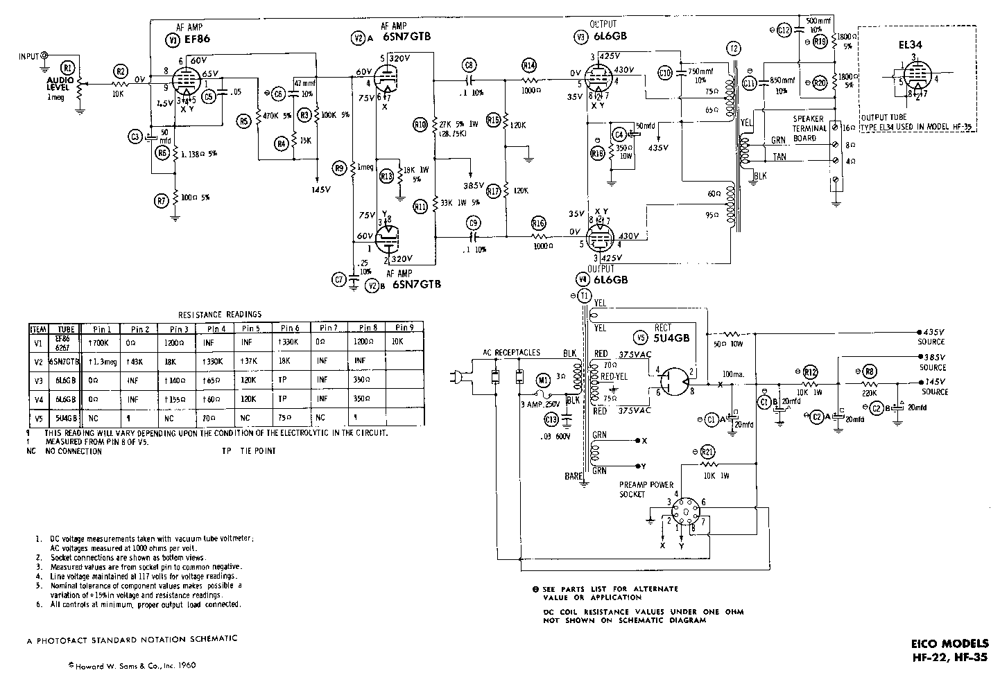

That’s a good question! After all, you can hack a spreadsheet program or build an interactive game by writing a lot of code, experimenting with it, and patching it. After awhile, the program you wrote does more or less what you wanted.
But imagine if the rest of the world worked that same way – would you want to drive a car or fly an airplane that was “hacked together”? How about travelling in a bus across a bridge that fell down a few times already and was repeatedly patched till it (seemed) to hold?
Perhaps these analogies are a bit extreme, but professional scientists and engineers rely on planning, design, and calculation so that they are certain the products they want to build will work before anyone starts building them. Professionals rely on an intellectual foundation to plan, design, and calculate. For example:
If you develop significant expertise in software engineering, perhaps you will work at a firm or lab that develops safety-critical software, that is, software upon which people’s money or safety or lives depend. (An example is the flight-control software that lives in the nose of a jet and flies it. Another example is the navigation software in a satellite that talks to the GPS device in someone’s car.) Software of this nature has to be working correctly from the beginning – there is no freedom to hack-and-patch the code once it is in use. Software engineers must use algebra and logic to plan and calculate how the software will behave before the software is built and installed.
This story is not an idle one: As you probably know, computer processor chips are planned out in a programming language that looks a lot like C. When Intel designed its first Pentium chip, there was a programming error in one of the chip’s coded hash tables. The coding was burned into hardware, and millions of chips were manufactured. The error was quickly detected – the chip did not always perform multiplication correctly. As a result, Intel lost a lot of money recalling the faulty chips and manufacturing a patched replacement. These days, Intel uses techniques for validating chip designs much like the one you will learn in this course.
If you have taken a software architecture course (e.g., CIS 501: Software Architecture and Design), you know that large systems can be drawn out, or “blueprinted,” with diagrams that show the components and how they connect together by means of method calls, event broadcast, and message passing. What we will learn in this course is lower level and more basic – we will learn how to calculate how the lines of coding in each component compute internal knowledge as they convert inputs into outputs.
To understand the idea, let’s think about electronics. When an electronic device, like a TV-set or radio, is designed, the parts of the device and their wirings are drawn out in a diagram called a schematic. Here is a schematic of a vacuum-tube guitar amplifier, the kind used by recording studios to produce a warm sound with good sustain:
Notice that the wires to the vacuum tubes (the globes labelled V1 through V5) are labelled with voltages, and there is a table in the lower left corner of the schematic that lists the correct resistances that will hold at each of the wires (“pins”) that connect to the tubes.
The voltage and resistance calculations are both an analysis and a prediction of how the circuit should behave. The numbers were calculated with mathematics and algebra, and if the electronics parts are working correctly, then these voltage, amperage, and resistance levels must occur – the foundations of electronics (math and algebra) demand it.
When the circuit is built, the actual levels are measured with a multimeter and compared to the calculations; if there is a discrepency, this is a signal that some part within the circuit is faulty.
A computer program is a “circuit” that “runs on” knowledge, and when we design the parts (lines) of a computer program, we should include “knowledge checks” that assert the amount of knowledge computed by the program at various points. We will learn how to write and insert such knowledge checks, called assertions, into programs and use the laws of symbolic logic to prove that the assertions will hold true.
You will see many examples of “program schematics” in the upcoming chapters. Here are two. First, this little code fragment apparently selects the larger of two integers and prints it:
1 2 3 4 5 6 7 8 9 10 11 12 13 14 | import org.sireum.logika._
// the above imports, for example, type Z,
// which is an arbitrary-precision integer type (i.e., scala.BigInt)
// for the remaining examples, we'll elide it
val x: Z = readInt() // readInt asks an integer from the user via console input
val y: Z = readInt() // val declares a read-only variable
var max: Z = 0 // var declares a read/write variable
if (x > y) {
max = x
} else {
max = y
}
println("Maximum of ", x, " and ", y, " is ", max, ".")
|
Think of the program as a “circuit” whose lines are “wired” together in
sequence.
Instead of voltage, information or knowledge “flows” from one line to the next.
Here is the program’s “schematic” where the internal “knowledge levels” are
written in symbolic logic and are inserted within the lines of the program,
enclosed by set braces, l"""{ ... }""":
3 4 5 6 7 8 9 10 11 12 13 14 15 16 17 18 19 20 21 22 23 24 25 | val x: Z = readInt()
val y: Z = readInt()
var max: Z = 0
if (x > y) {
l"""{ 1. x > y premise }"""
max = x
l"""{ 1. x > y premise
2. max == x premise
3. max ≥ x algebra 2
4. max ≥ y algebra 1 3
5. max ≥ x ∧ max ≥ y ∧i 3 4 }"""
} else {
l"""{ 1. ¬(x > y) premise
2. y ≥ x algebra 1 }"""
max = y
l"""{ 1. max == y premise
2. y ≥ x premise
3. max ≥ y algebra 1
4. max ≥ x algebra 1 2
5. max ≥ x ∧ max ≥ y ∧i 4 3 }"""
}
l"""{ 1. max ≥ x ∧ max ≥ y premise }"""
println("Maximum of ", x, " and ", y, " is ", max, ".")
|
The last annotation, l"""{ ... max >= x ∧ max >= y ... }""", is a symbolic-logic
statement that max is guaranteed to be greater-or-equal to both inputs.
We now know, once the program is implemented, it will behave with this logical
property.
Here is a second example, a complete analysis of a function that squares all the integers in an array that is passed to it as its argument:
3 4 5 6 7 8 9 10 11 12 13 14 15 16 17 18 19 20 21 22 23 24 25 26 27 28 29 30 31 32 33 34 35 36 37 38 39 40 41 42 43 44 45 46 47 48 49 50 51 52 53 54 55 56 57 58 59 60 61 62 63 64 65 66 67 68 69 70 71 72 73 74 75 76 77 78 79 80 81 82 83 84 85 86 87 88 89 90 91 92 93 94 95 96 97 98 99 100 101 102 103 104 105 106 107 108 109 110 111 112 113 114 115 116 117 118 119 120 121 122 123 124 125 126 127 128 129 130 131 132 133 134 135 136 137 138 139 140 141 142 143 144 145 146 147 148 149 150 151 152 153 154 155 156 157 | // Updates parameter a, which is of type array of integers (ZS),
// in place so that each of its ints are squared
def square(a: ZS): Unit = {
l"""{ modifies a
post ∀i: (0 ..< a.size) a(i) == a_in(i) * a_in(i) }"""
l"""{ 1. a == a_in premise }"""
var x: Z = 0
l"""{ 1. a == a_in premise
2. x == 0 premise
3. 0 ≤ x algebra 2
4. 0 ≤ a.size algebra
5. x ≤ a.size subst2 2 4
6. {
7. j: Z
8. {
9. 0 ≤ j ∧ j < x assume
10. 0 ≤ j ∧e1 9
11. j < x ∧e2 9
12. ⊥ algebra 10 11 2
13. a(j) == a_in(j) * a_in(j) ⊥e 12
}
14. 0 ≤ j ∧ j < x -> a(j) == a_in(j) * a_in(j) →i 8
}
15. ∀i: (0 ..< x) a(i) == a_in(i) * a_in(i) ∀i 6
16. {
17. j: Z
18. {
19. x ≤ j ∧ j < a.size assume
20. x ≤ j ∧e1 19
21. j < a.size ∧e2 19
22. a(j) == a_in(j) algebra 1 2 20 21
}
23. x ≤ j ∧ j < a.size → a(j) == a_in(j) →i 18
}
24. ∀i: (x ..< a.size) a(i) == a_in(i) ∀i 16 }"""
while (x != a.size) {
l"""{ invariant ∀i: (0 ..< x) a(i) == a_in(i) * a_in(i)
∀i: (x ..< a.size) a(i) == a_in(i)
0 ≤ x
x ≤ a.size
modifies x, a }"""
l"""{ 1. ∀i: (0 ..< x) a(i) == a_in(i) * a_in(i) premise
2. ∀i: (x ..< a.size) a(i) == a_in(i) premise
3. 0 ≤ x premise
4. x ≤ a.size premise
5. x ≠ a.size premise
6. x < a.size algebra 4 5 }"""
a(x) = a(x) * a(x)
l"""{ 1. a(x) == a_old(x) * a_old(x) premise
2. ∀i: (0 ..< x) a_old(i) == a_in(i) * a_in(i) premise
3. ∀i: (x ..< a_old.size) a_old(i) == a_in(i) premise
4. a.size == a_old.size premise
5. x < a_old.size premise
6. x < a.size subst2 4 5
7. ∀i: (x ..< a.size) a_old(i) == a_in(i) subst2 4 3
8. x ≤ x ∧ x < a.size → a_old(x) == a_in(x) ∀e 7 x
9. x ≤ x algebra
10. x ≤ x ∧ x < a.size ∧i 9 6
11. a_old(x) == a_in(x) →e 8 10
12. a(x) == a_in(x) * a_in(x) subst1 11 1
13. ∀q_i: (0 ..< a.size)
q_i ≠ x → a(q_i) == a_old(q_i) premise
14. {
15. j: Z
16. 0 ≤ j ∧ j < a.size →
(j ≠ x → a(j) == a_old(j)) ∀e 13 j
17. {
18. 0 ≤ j ∧ j ≤ x assume
19. 0 ≤ j ∧ j < x →
a_old(j) == a_in(j) * a_in(j) ∀e 2 j
20. 0 ≤ j ∧e1 18
21. j ≤ x ∧e2 18
22. {
23. j < x assume
24. 0 ≤ j ∧ j < x ∧i 20 23
25. a_old(j) == a_in(j) * a_in(j) →e 19 24
26. j < a.size algebra 23 6
27. j ≠ x algebra 23
29. 0 ≤ j ∧ j < a.size ∧i 20 26
30. j ≠ x → a(j) == a_old(j) →e 16 29
31. a(j) == a_old(j) →e 30 27
32. a(j) == a_in(j) * a_in(j) subst2 31 25
}
33. {
34. j == x assume
35. a(j) == a_in(j) * a_in(j) subst2 34 12
}
36. a(j) == a_in(j) * a_in(j) ∨e 21 22 33
}
37. 0 ≤ j ∧ j ≤ x → a(j) == a_in(j) * a_in(j) →i 17
}
38. ∀i: (0 .. x) a(i) == a_in(i) * a_in(i) ∀i 14
39. 0 ≤ x premise
40. {
41. j: Z
42. 0 ≤ j ∧ j < a.size →
(j ≠ x → a(j) == a_old(j)) ∀e 13 j
43. {
44. x + 1 ≤ j ∧ j < a.size assume
45. x + 1 ≤ j ∧e1 44
46. j < a.size ∧e2 44
47. 0 ≤ j algebra 45 39
48. j ≠ x algebra 45
49. 0 ≤ j ∧ j < a.size ∧i 47 46
50. j ≠ x → a(j) == a_old(j) →e 42 49
51. a(j) == a_old(j) →e 50 48
52. x ≤ j ∧ j < a.size →
a_old(j) == a_in(j) ∀e 7 j
53. x ≤ j algebra 45
54. x ≤ j ∧ j < a.size ∧i 53 46
55. a_old(j) == a_in(j) →e 52 54
56. a(j) == a_in(j) subst1 55 51
}
57. x + 1 ≤ j ∧ j < a.size → a(j) == a_in(j) →i 43
}
58. ∀i: (x + 1 ..< a.size) a(i) == a_in(i) ∀i 40 }"""
x = x + 1
l"""{ 1. x == x_old + 1 premise
2. 0 ≤ x_old premise
3. x_old < a.size premise
4. ∀i: (0 .. x_old) a(i) == a_in(i) * a_in(i) premise
5. ∀i: (x_old + 1 ..< a.size) a(i) == a_in(i) premise
6. 0 ≤ x algebra 1 2
7. x ≤ a.size algebra 1 3
8. ∀i: (x ..< a.size) a(i) == a_in(i) subst2 1 5
9. {
10. j: Z
11. 0 ≤ j ∧ j ≤ x_old →
a(j) == a_in(j) * a_in(j) ∀e 4 j
12. {
13. 0 ≤ j ∧ j < x assume
14. 0 ≤ j ∧e1 13
15. j < x ∧e2 13
16. j ≤ x_old algebra 15 1
17. 0 ≤ j ∧ j ≤ x_old ∧i 14 16
18. a(j) == a_in(j) * a_in(j) →e 11 17
}
19. 0 ≤ j ∧ j < x → a(j) == a_in(j) * a_in(j) →i 12
}
20. ∀i: (0 ..< x) a(i) == a_in(i) * a_in(i) ∀i 9 }"""
}
l"""{ 1. ∀i: (0 ..< x) a(i) == a_in(i) * a_in(i) premise
2. not (x != a.size) premise
3. x == a.size algebra 2
4. ∀i: (0 ..< a.size) a(i) == a_in(i) * a_in(i) subst1 3 1 }"""
}
|
You are not expected to understand the above, but the function’s
post-condition list the guarantees of what goes out for any given
array of integers.
In this case, “what goes out” is an array whose elements are squared –
it is guaranteed to work, because it was analyzed the same way an electronics
engineer analyzes a circuit.
If the above somehow looks daunting, here is a shorter proof that leverages Logika’s automation:
3 4 5 6 7 8 9 10 11 12 13 14 15 16 17 18 19 20 21 22 23 24 | def square(a: ZS): Unit = {
l"""{ modifies a
post ∀i: (0 ..< a.size) a(i) == a_in(i) * a_in(i) }"""
var x: Z = 0
while (x != a.size) {
l"""{ invariant ∀i: (0 ..< x) a(i) == a_in(i) * a_in(i)
∀i: (x ..< a.size) a(i) == a_in(i)
0 ≤ x
x ≤ a.size
modifies x, a }"""
a(x) = a(x) * a(x)
l"""{ 1. x < a.size auto
2. ∀i: (0 .. x) a(i) == a_in(i) * a_in(i) auto
3. ∀i: (x + 1 ..< a.size) a(i) == a_in(i) auto }"""
x = x + 1
}
}
|
This note was adapted from David Schmidt's CIS 301, 2008, Chapter 00 course note.